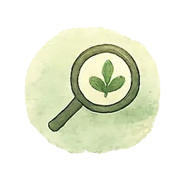
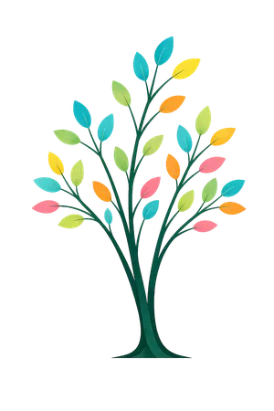
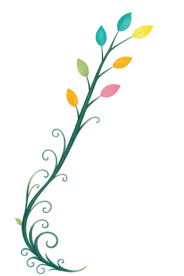
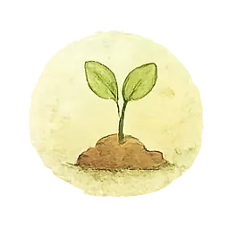
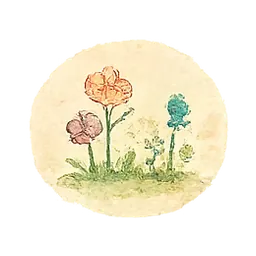
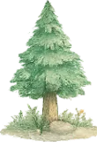
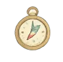
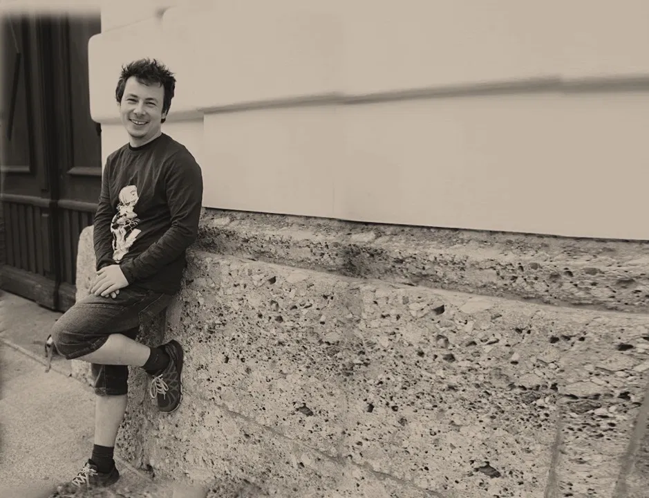

Kleine Auslöser kippen in große Eskalationen. Danach weiß niemand mehr, wie es dazu kam.

Beziehung · Selbstbestimmung · Ko-Regulation
Waldkätzchen
Verstehen. Verbinden. Verändern.
Wenn Verhalten laut wird, ist oft etwas anderes lange nicht gehört worden. Waldkätzchen begleitet Familien und Fachkräfte dort, wo einfache Erziehungstipps nicht mehr weiterhelfen.
Das Kind ist nicht das Problem. Verhalten ist ein Hinweis. Der Kontext gehört immer mit ins Bild.
Vielleicht ist niemand falsch. Vielleicht ist nur zu viel gleichzeitig.

Heilpäd. fundiert Emotional begleitend
Emotional begleitend Alltagsnah
Alltagsnah Mit Geschichten
Mit Geschichten Podcast geplant
Podcast geplant Für Verbindung
Für Verbindung

Wenn Alltag immer enger wird
Kommt dir das bekannt vor?
Wenn du dich in einem dieser Sätze wiederfindest, bist du hier richtig.
Rückzug, Wut oder Überforderung bestimmen den Alltag.
Schule, Familie und Alltag sehen jeweils etwas anderes.
Nach Konflikten bleiben Schuld, Scham und Erschöpfung zurück.
Übergänge und Morgende kosten jeden Tag dieselbe Kraft.
Du bist unsicher, welche Grenze gerade die richtige ist.
Vielleicht war es euer letzter Dienstag
Es beginnt selten mit der großen Krise.
Manchmal beginnt es mit einem Pullover. Dem falschen.
Zwanzig Minuten später weinen alle. Jemand hat geschrien, eine Tür ist zugefallen. Und obwohl ihr es so oft anders versucht habt, steht wieder dieselbe Frage im Raum:
Warum kippt es bei uns immer wieder so schnell?
In der Schule ist alles unauffällig. Zu Hause bricht ab vierzehn Uhr die Welt zusammen.
Ich habe streng, verständnisvoll, konsequent und geduldig versucht. Nichts hält länger als drei Tage.
Nach Konflikten bleiben Schuld, Scham und Erschöpfung zurück.
Wir funktionieren noch. Aber wir kommen einander nicht mehr nahe.
Solche Sätze sind kein Versagen. Sie sind der Anfang eines Gesprächs.


Warum das hier keine Coaching-Seite ist
Ihr braucht nicht noch mehr Tipps, die nur funktionieren, wenn gerade alles ruhig ist.
Waldkätzchen ist kein Programm und kein Versprechen, ein Kind in wenigen Schritten passender zu machen. Es ist eine Art hinzuschauen – auf Situationen, Beziehungen, Anforderungen und die Stimmen, die im Hintergrund mitreden.
Nicht: „Mit diesem Kind stimmt etwas nicht.“
Sondern: „Diese Situation überfordert gerade alle. Wir schauen, was dazu beiträgt und was Sicherheit herstellt.“

Bin ich zu streng?
Zu weich?
Zu laut?
Zu wenig da?
Was übersehe ich?
Zu weich?
Zu laut?
Zu wenig da?
Was übersehe ich?
Nicht so
- Fragen, was mit dem Kind nicht stimmt.
- Verhalten möglichst schnell abstellen.
- Nur die Person behandeln, die gerade am lautesten auffällt.
- Aus einer plausiblen Erklärung eine Gewissheit machen.
- Versprechen, dass es in sechs Wochen gelöst ist.
Sondern so
- Fragen, was diese Situation für alle so schwer macht.
- Lesen, welche Funktion das Verhalten gerade hat.
- Auch die Bedingungen ändern, nicht nur das Kind.
- Vermutungen als Vermutungen behandeln und überprüfen.
- Kleine Versuche, deren Wirkung wir gemeinsam ansehen.
Der Waldkätzchen-Weg
Nicht schneller werden. Genauer werden.
Verstehen, Verbinden und Verändern sind keine drei fertigen Schritte. Sie sind drei Bewegungen, zu denen wir immer wieder zurückkehren.
Verstehen
Wir beobachten, sammeln Kontext und bilden vorsichtige Vermutungen. Was ist konkret passiert – und wann passiert es eigentlich nicht?
Verbinden
Wir verbinden Verhalten mit Erleben, Beziehungen, Körper, Umwelt und Geschichte. „Dieses Verhalten stoppe ich. Du bleibst Teil unserer Beziehung.“

Verändern
Wir vereinbaren einen kleinen, überprüfbaren Versuch – und reparieren, wenn etwas nicht gelungen ist. Reparatur zählt mehr als Perfektion.
Der Grundsatz
Wild und verbunden.
Ein Kind muss nicht angepasst sein,
um verbunden zu sein.
Wild sein heißt lebendig, intensiv, eigenwillig, laut, schnell, empfindsam. Verbunden sein heißt gesehen werden, sicher sein, nicht aufgegeben werden.
Wild und verbunden bedeutet nicht, ständig aktiv zu sein. Wild kann auch heißen, den eigenen Rhythmus gegen fremde Erwartungen zu verteidigen.
Auch in Konflikten kann Beziehung bestehen bleiben. Genau daran arbeiten wir.
 wild
wild
 verbunden
verbunden
Die Logik dahinter
Wir fangen außen an, nicht beim Kind.
Handeln kommt nicht zuerst. Es wird aus einem gemeinsam entwickelten Verständnis abgeleitet – Schicht für Schicht von außen nach innen, bis zu einem kleinen, tragfähigen Schritt im Alltag.
-
1
Rechte, Würde, Teilhabe
Wird die Person gehört, informiert und respektiert? Würde vor Funktionieren, Teilhabe vor Anpassung.
-
2
Lebenswelt und System
Welche Beziehungen, Barrieren und Ressourcen wirken mit? Nicht jedes Hindernis liegt im Kind.
-
3
Beziehung · Selbstbestimmung · Ko-Regulation
Was stärkt Verbindung? Wo entsteht echter Einfluss? Was hilft, wieder handlungsfähig zu werden?
-
4
Waldorte und Tiere
Welche Bilder helfen beim Sortieren, ohne jemanden festzulegen?
-
5
Fünf Blicke
Was sehen, spüren und vermuten wir – und was übersehen wir gerade?
-
6
Nächster Schritt im Alltag
Klein, konkret, sicher und überprüfbar. Als Versuch, nicht als Lösung.
Je plausibler eine Erklärung klingt, desto wichtiger ist ihre Überprüfung. Deshalb heißt es hier „Es könnte sein …“, „Wir beobachten …“, „Passt das zu deiner Erfahrung?“
1 · Meine Haltung
Verhalten ist kein Feind.
Verhalten ist eine Sprache.
Kein Kind verhält sich schwierig ohne Grund. Waldkätzchen ist beziehungs-, autonomie- und regulationsorientiert – keine der drei Orientierungen darf allein regieren.
Verlässlichkeit, Interesse, die Bereitschaft zur Reparatur.
Wahl, Einfluss, Nein-Räume, Würde.
Ruhe leihen, Tempo anpassen, gemeinsam wieder handlungsfähig werden.
Veränderung beginnt nicht mit Druck – sondern mit Verstehen.
2 · Mein Blick auf Situationen
Der Wald sortiert, was mitwirkt.
Acht Waldorte helfen, Kontext, Geschichte und Hindernisse auseinanderzuhalten. Mehrere Orte können gleichzeitig bedeutsam sein – das ist keine Reise mit fester Reihenfolge.

Lichtungankommen und sehen
Alter Waldalte Stimmen
NebelUnklarheit
3 · Wie die Waldkätzchen helfen
Fünf Blicke, die das Urteil verlangsamen.
Sie erzeugen Hypothesen, keine Diagnosen. Die Macherin kommt bewusst zuletzt: Handeln, ohne vorher zu beobachten, zu spüren und das Umfeld anzusehen, erzeugt meist nur mehr Druck.
 1BeobachterinIch seheWas wäre auf einer Kamera erkennbar? Und wann tritt es nicht auf?2FühlerinIch spüreWie hoch ist die Anspannung – bei allen Beteiligten, auch bei mir?
1BeobachterinIch seheWas wäre auf einer Kamera erkennbar? Und wann tritt es nicht auf?2FühlerinIch spüreWie hoch ist die Anspannung – bei allen Beteiligten, auch bei mir? 3DenkerinIch vermuteWelche Funktion könnte das haben? Was würde die Vermutung widerlegen?
3DenkerinIch vermuteWelche Funktion könnte das haben? Was würde die Vermutung widerlegen? 4SystemblickIch sehe im UmfeldWelche Schleife verstärkt sich? Wer ist überlastet? Wessen Perspektive fehlt?
4SystemblickIch sehe im UmfeldWelche Schleife verstärkt sich? Wer ist überlastet? Wessen Perspektive fehlt? 5MacherinEin nächster SchrittWas erhöht heute Sicherheit? Woran merken wir, ob es hilft?
5MacherinEin nächster SchrittWas erhöht heute Sicherheit? Woran merken wir, ob es hilft?4 · Warum Kuscheltiere?
Tigi betritt den Raum zuerst.
Ein Kind sitzt schweigend in der Ecke. Tigi kommt zuerst – klein, frech, und braucht selbst Zuneigung, um zu wissen, dass er willkommen ist. Er stupst an. Zuckt zurück. Bleibt. Ich komme danach.
Das Kind kommt aus dem Ausnahmezustand zurück. Und ich bin plötzlich nicht mehr der Gegner, sondern derjenige, der mit ihm zusammen zuschaut.
Figuren und Handpuppen schaffen einen Abstand, der Verbindung erst möglich macht – aus „du bist aggressiv“ wird „gerade zeigt sich viel von Luis“. Kein Trick. Eine Haltung.
Kein Kind ist ein Tier. Tiere kommen und gehen. Sie beschreiben Situationen, keine Menschen.
Am liebsten wären es Ziegen. Die gibt es noch nicht – ich darf bisher keine eigenen halten.
 TigiKontrolle und Vorhersehbarkeit
TigiKontrolle und Vorhersehbarkeit EtanaRückzug und Schutz
EtanaRückzug und Schutz ElfriedeAnpassung und verborgene Spannung
ElfriedeAnpassung und verborgene Spannung WaddaReduktion und Sprachlosigkeit
WaddaReduktion und Sprachlosigkeit Kata-RinaNähe und Festhalten
Kata-RinaNähe und Festhalten
Wer im Wald lebt
Die Tiere erzählen, wenn Worte schwer werden.
Die Waldtiere sind keine perfekten Vorbilder. Sie sind Persönlichkeiten. Laut, vorsichtig, eigensinnig, kontrollierend, verträumt oder zurückgezogen. Sie tragen etwas in sich, das wir aus echten Situationen kennen.
Die Tiere helfen, auf Situationen zu schauen, ohne Menschen festzulegen.
Wiedererkennen
„So fühlt sich das manchmal an.“
Entlasten
„Ich darf erst über die Figur sprechen.“
Verbinden
„Wir schauen gemeinsam hin.“
Teddy / Bär
Luis — Wenn alles gleichzeitig zu viel wird.
„Was würde helfen, bevor es zu viel wird – nicht erst danach?“
Chaos und Impuls
Etana — Wenn Rückzug gerade Schutz ist.
„Was wird möglich, wenn niemand sofort eine Antwort verlangt?“
Rückzug und Schutz
Tigi — Wenn Kontrolle Sicherheit geben soll.
„Was müsste vorhersehbarer werden, damit Tigi nicht alles selbst bewachen muss?“
Kontrolle und Vorhersehbarkeit
Kata-Rina — Wenn Nähe zur Frage wird, ob sie bleibt.
„Welches verlässliche Zeichen könnte zeigen, dass die Verbindung hält?“
Nähe und Festhalten
Fuchs
Niko — Wenn Nein sagen der einzige Einfluss ist, der bleibt.
„Wo könnte Niko heute wirklich mitentscheiden?“
Autonomie und Freiheit
Elfriede — Wenn Anpassung leiser ist als das eigene Bedürfnis.
„Was würde Elfriede sagen, wenn ein Nein sicher wäre?“
Anpassung und verborgene Spannung
Wadda — Wenn Worte gerade nicht reichen.
„Welcher andere Weg könnte Wadda gerade mehr sagen lassen als Sprache?“
Reduktion und Sprachlosigkeit
Esel
Iella — Wenn Stabilität das Ergebnis von Sicherheit ist.
„Was hat geholfen, dass Iella sich wieder geschützt und verbunden fühlen konnte?“
Stabilität und Selbstwert
Kein Mensch ist ein Tier. Tiere kommen und gehen. Sie zeigen eine mögliche Dynamik, keine feste Identität.
Situationen aus dem Wald
Was geschieht, wenn wir nicht sofort urteilen?
Teddy / Bär
Situation 1 · Auf der Lichtung
Luis wird wild, als alles gleichzeitig passiert.
„Ich wollte doch nur, dass es weitergeht!“
Alle wollen los. Jacke. Schuhe. Tasche. Noch eine Frage. Dann fällt etwas um. Luis brüllt, wirft die Mütze weg und rennt zur Tür. Von außen sieht es nach Trotz aus. Vielleicht ist es aber ein Moment, in dem zu viel auf einmal kam.
Was verändert sich, wenn wir nicht zuerst „Warum macht er das?“ fragen – sondern „Was war gerade zu viel?“
1BeobachterinIch seheViele Aufforderungen kamen direkt nacheinander. Luis wurde lauter, dann körperlich schneller.2FühlerinIch spüreVielleicht ist da Überforderung. Vielleicht auch das Gefühl, keine Kontrolle mehr zu haben.3DenkerinIch vermuteÜbergänge können schwer sein – besonders, wenn sie unter Zeitdruck passieren.4SystemblickIch sehe im UmfeldDer ganze Morgen ist eng. Erwachsene sind angespannt. Der Raum ist voll mit Erwartungen.5MacherinEin nächster SchrittÜbergänge früher ankündigen und nur eine Sache nach der anderen sagen.Situation 2 · Am Höhleneingang Etana verschwindet, obwohl alle Nähe anbieten.
Es war ein schöner Nachmittag. Trotzdem wird Etana still. Als jemand nachfragt, sagt sie nichts mehr. Sie zieht sich zurück, reagiert kaum und braucht ihre Höhle. Das kann weh tun, wenn man helfen möchte. Und trotzdem kann Rückzug gerade Schutz sein.
- Beobachterin
- Etana wird leiser, antwortet weniger und sucht einen geschützten Ort.
- Fühlerin
- Vielleicht fühlt sich ihr Inneres sehr voll an. Vielleicht braucht sie Sicherheit ohne Fragen.
- Denkerin
- Manche Eindrücke wirken erst später. Der Rückzug kommt nicht immer dort, wo die Belastung beginnt.
- Systemblick
- Viele gute Begegnungen können trotzdem anstrengend sein. Auch Schönes verbraucht Kraft.
- Macherin
- Nähe anbieten, ohne Antwort zu verlangen.
Situation 3 · Am Felsenmeer Iella sagt Nein – und alle hören nur Widerstand.
Die Gruppe ist sich einig: Es geht weiter. Nur Iella nicht. Sie bleibt stehen. Jede Aufforderung macht sie fester. Von außen wirkt es wie Sturheit. Vielleicht ist es aber der Moment, in dem sie merkt: Meine Grenze wurde gerade nicht mitgenommen.
- Beobachterin
- Iella bleibt stehen, sagt Nein und wird unbeweglicher, je mehr Druck entsteht.
- Fühlerin
- Vielleicht schützt sie sich. Vielleicht fühlt sie sich übergangen oder nicht gefragt.
- Denkerin
- Druck verstärkt hier genau das Verhalten, das eigentlich kleiner werden soll.
- Systemblick
- Die Gruppe hat Tempo. Iella braucht Beteiligung. Beides prallt aufeinander.
- Macherin
- Wahlmöglichkeiten geben und kurz gemeinsam anhalten.
Situation 4 · Zwischen den Echos Elfriede lächelt weiter, obwohl innen längst zu viel ist.
Sie hilft noch schnell. Sagt „passt schon“. Schiebt den eigenen Wunsch nach hinten. Niemand merkt, dass ihr Blick müde wird. Erst später zieht sie sich erschöpft zurück. Manche Überforderung ist sehr leise.
- Beobachterin
- Elfriede sagt zu, hilft, lächelt – und wird gleichzeitig immer stiller.
- Fühlerin
- Vielleicht ist da Sorge, andere zu enttäuschen. Vielleicht auch Müdigkeit, die keinen Platz findet.
- Denkerin
- Wenn Zustimmung automatisch kommt, lohnt sich die Frage, ob wirklich Wahlfreiheit da war.
- Systemblick
- Vielleicht wird Hilfsbereitschaft sehr geschätzt – aber Erschöpfung weniger gut gesehen.
- Macherin
- Aktiv fragen, was Elfriede selbst gerade braucht.
Vorher sahen wir Trotz. Jetzt sehen wir möglicherweise Zeitdruck, Reizlage, fehlenden Einfluss und erschöpfte Erwachsene. Aus einem Urteil wird eine überprüfbare Vermutung. Aus einer Schuldfrage wird eine gemeinsame Aufgabe.
Schutz und Verbindung gehören zusammen
Verstehen heißt nicht entschuldigen.
Ein Grund macht Verhalten verständlicher. Er macht Verletzungen nicht in Ordnung. Gerade deshalb schauen wir genau hin: damit Unterbrechung, Schutz, sichere Grenzen und Reparatur möglich werden.
Verbindung bedeutet nicht Grenzenlosigkeit. Und Veränderung bedeutet nicht Anpassung um jeden Preis.
Eine tragfähige Grenze hat vier Teile:
- Wahrnehmung„Ich sehe, dass du außer dir bist.“
- Stopp„Ich lasse nicht zu, dass du schlägst.“
- Schutz„Ich gehe einen Schritt zurück und halte den Weg frei.“
- Beziehung„Ich bleibe erreichbar.“
Bei akuter Gefahr gilt die Reihenfolge: zuerst sichern, dann regulieren, später verstehen. Eine Ursachensuche mitten in höchster Anspannung erhöht meist nur den Druck.
Worauf das basiert
Bilder statt Fachwörter. Die Fachwörter gibt es trotzdem.
Der Wald übersetzt, er ersetzt nichts. Dahinter stehen etablierte entwicklungspsychologische, heilpädagogische und systemische Modelle. Waldkätzchen behauptet dabei ausdrücklich nicht, als Gesamtverfahren schon empirisch geprüft zu sein. Die Sorgfalt liegt in der offengelegten Herleitung, in überprüfbaren Vermutungen und in klaren Grenzen.
Entwicklung im Kontext
Verhalten entsteht in fortlaufender Wechselwirkung zwischen Person, Beziehungen, Orten und Zeit – nicht aus einer einzelnen Ursache.
Bronfenbrenner & Morris, 2006 · Sameroff, 2009Selbstbestimmung
Autonomie, Kompetenz und Zugehörigkeit sind psychologische Grundbedürfnisse. Werden sie dauerhaft frustriert, wachsen Rückzug und Widerstand.
Deci & Ryan, 2000 · Ryan & Deci, 2017Ko-Regulation
Regulation entsteht zuerst zwischen Menschen und wird erst nach und nach verinnerlicht. Selbststeuerung lässt sich nicht dort erwarten, wo sie gerade unmöglich ist.
Gross, 2015 · Morris et al., 2007 · Murray et al., 2015Exekutive Funktionen
Unter Stress, Müdigkeit oder Reizüberflutung ist eine Fähigkeit schlechter zugänglich. Die Frage ist nicht nur, ob jemand kann – sondern ob er gerade herankommt.
Diamond, 2013Mentalisieren
Bei hoher Anspannung sinkt bei allen die Fähigkeit, differenziert über Absichten und Gefühle nachzudenken. Die fünf Blicke halten sie länger offen.
Fonagy et al., 2002Neurodiversität
Verständigungsprobleme entstehen wechselseitig, nicht nur auf einer Seite. Zugleich werden reale Beeinträchtigungen und Unterstützungsbedarfe nicht romantisiert.
Milton, 2012 · Pellicano & den Houting, 2022


Warum Waldkätzchen entstanden ist
Aus zwei Welten. Für eine gemeinsame Perspektive.
Ich war oft da. Aber ich wusste nicht, wie ich ankommen sollte.
Nicht weil ich nicht wollte. Sondern weil mir niemand gezeigt hatte, wie das geht – echte Verbindung, im Alltag, ohne die richtigen Worte parat zu haben.
Jahrelang war ich erfolgreich. Ich habe Verantwortung übernommen und Dinge aufgebaut – und hatte trotzdem das Gefühl, nicht wirklich anzukommen. Ich kannte den Nebel. Ich kannte die Höhle. Nur hatte ich damals noch keine Namen dafür.
Dazu kommen viele Jahre in der IT und die Heilpädagogik. In beidem geht es darum, Muster zu erkennen – im einen Fall in Systemen, im anderen in Beziehungen.
Gleichzeitig habe ich erlebt, wie schnell Verhalten bewertet wird – besonders dann, wenn Kinder, Familien oder Menschen mit besonderen Wahrnehmungen eigentlich Verständnis, Orientierung oder einen sicheren Umweg ins Gespräch brauchen. Ich wollte diesem Druck etwas entgegensetzen. Daraus ist Waldkätzchen gewachsen.
Waldkätzchen ist das, was ich selbst gebraucht hätte.
Meine ganze GeschichteWas ich anbiete
Vier Wege – je nachdem, wer gerade Unterstützung braucht.
Jede Begleitung beginnt mit einem Erstgespräch. Es ist kostenfrei, unverbindlich und dient nur einer Frage: Passt das hier für euch?
Familienbegleitung
Wir schauen gemeinsam auf euren Alltag und entwickeln Schritte, die zu euch passen.
- Für
- Eltern, Kinder, Geschwister
- Rahmen
- 60–90 Min · online oder vor Ort
Autismus & PDA
Mehr Verständnis, weniger Anforderungsdruck – und Wege, die im echten Tag tragen.
- Für
- Familien und Fachkräfte
- Rahmen
- einzeln oder als Reihe
Begleitung für Väter
Ein eigener Raum für Verantwortung, Wut, Nähe – und die Frage, was für ein Vater du sein willst.
- Für
- Väter, auch getrennt lebend
- Rahmen
- einzeln, ohne Zuschauer

Fachberatung & Teams
Fallberatung, Teamtage und eine gemeinsame Sprache für Situationen, die feststecken.
- Für
- Kitas, Schulen, Teams
- Rahmen
- halb- oder ganztags
Preise nenne ich im Erstgespräch, weil Umfang und Format sich stark unterscheiden. Wenn Geld ein Hindernis ist, sag es bitte – dafür finden wir meistens eine Lösung.

Meine Domäne
Herausfordernde Dynamiken verstehen
Ich begleite nicht nur bei großen Krisen. Auch das, was von außen banal wirkt, kann für Familien hochbelastend sein: Wutausbrüche, Rückzug, Eskalationen, Überforderung, Übergänge, Schule, Geschwisterdynamiken und Missverständnisse im Alltag. Genau dort setze ich an.
Es darf knirschen – wir müssen nur lernen, anders hinzuschauen.
Wie ich arbeite →
Nicht nur die lauteste Person
Ich arbeite mit dem Beziehungssystem.
Eltern & Familien
Väter
Kinder & Jugendliche
Schule & Kita
Teams
Helfersysteme
Ich arbeite mit allen Beteiligten, die notwendig sind – nicht nur mit der Person, die gerade am lautesten auffällt.
So läuft es ab
Du musst nicht wissen, wo du anfangen sollst.
Das finden wir gemeinsam heraus.
-
1
Du meldest dich
Ein paar Sätze reichen. Unverbindlich und kostenfrei.
-
Wir schauen hin
Was passiert konkret? Was wirkt im Hintergrund mit?
-
Wir sortieren
Was ist jetzt wichtig, was kann warten?
-
Ein erster Schritt
Klein, konkret und im Alltag wirklich machbar.
Waldpost · Wissen und Impulse
Haltung soll nicht behauptet, sondern nachvollziehbar werden.
Hintergründe und Einordnungen zu Verhalten, Beziehung, Autismus, Wut, Reparatur nach Konflikten und systemischem Denken. Zum Nachlesen, bevor du eine Frage stellen möchtest.

Das Kind ist nicht das Problem
Verhalten verstehen

Klar bleiben, ohne hart zu werden
Beziehung & Klarheit
Inklusion beginnt nicht beim Kind
Inklusion & Barrieren
Der Körper redet mit
Psychomotorik

Sicherheit vor Lösung
Traumasensibel
Wenn der Mensch ins Konzept passen soll
Autismus & Therapie

Alles beginnt mit einem Hallo.
Erzähl mir, was gerade knirscht.
Du musst keine perfekte Zusammenfassung schreiben. Ein paar Sätze reichen für den Anfang.
Wadda hört zu. Wenn Worte gerade schwer sind, reicht auch ein Stichwort. Wir sortieren dann gemeinsam.

Ihr müsst den nächsten Schritt
nicht schon kennen.
Ich bin da, wenn ihr bereit seid – mit Verständnis, Erfahrung und einem sicheren Rahmen. Ein paar Sätze reichen für den Anfang.
wild sein dürfen
und verbunden bleiben